El Centro de Día se posiciona como uno de los dispositivos socio-terapéuticos de la primera línea de trabajo (terapéutico-asistencial y social-comunitaria), del proyecto institucional del Centro de Atención Psicosocial, intentando dar respuestas a las problemáticas mencionadas ya que en el contexto actual, las mismas son insuficientes o inapropiadas.
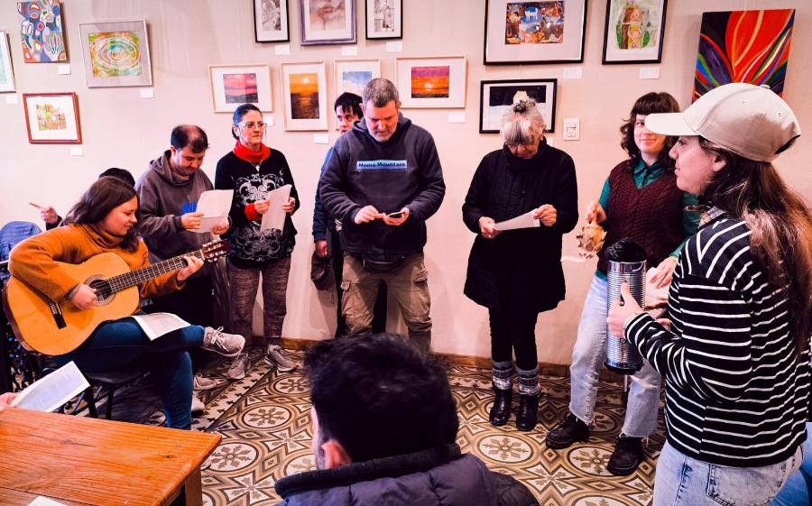
Fundamento teórico
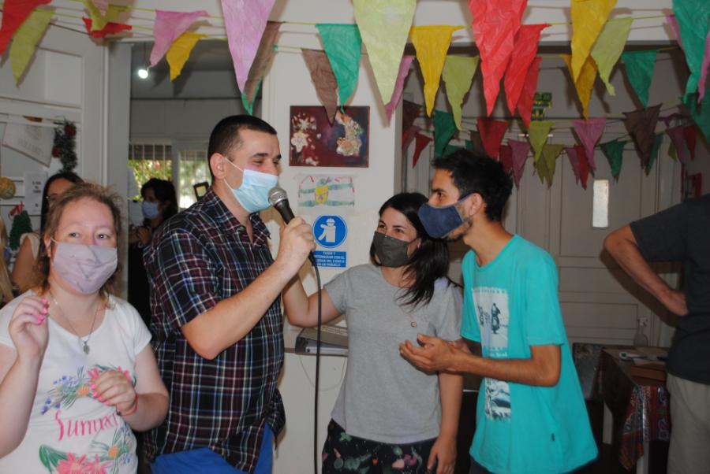
Trabajo entre varios y libertad de circulación
El trabajo entre varios nos implica a todos más allá de nuestros roles profesionales, nuestros oficios y nuestras planificaciones. Se trata de propiciar y sostener ese proceso de subjetivación que supone siempre y al mismo tiempo, un permanente intercambio y apoyo con el medio familiar y con el entorno social.
En lo cotidiano se promueve rescatar la singularidad de cada uno de los sujetos con los que trabajamos, inmersos en una colectividad terapéutica que favorezca el encuentro con el otro, promoviéndolos de la manera en que se dan: puntuales y azarosos entre los participantes.
Propiciamos entonces la “libertad de circulación que permita el espacio del decir” (Jean Oury, 2002). No discriminamos patologías, ni limitamos el libre accionar de las personas que asisten a Casandra. Sí atendemos a las condiciones particulares que hacen a cada sujeto y a la situación en la que está inmerso, prestando suma atención a las singularidades y a las posibilidades de expresión subjetiva.
Función del Acompañante
La función es la de acompañar, función que no solo cumplen los profesionales y orientadores, sino que también es llevada a cabo por los mismos compañeros.
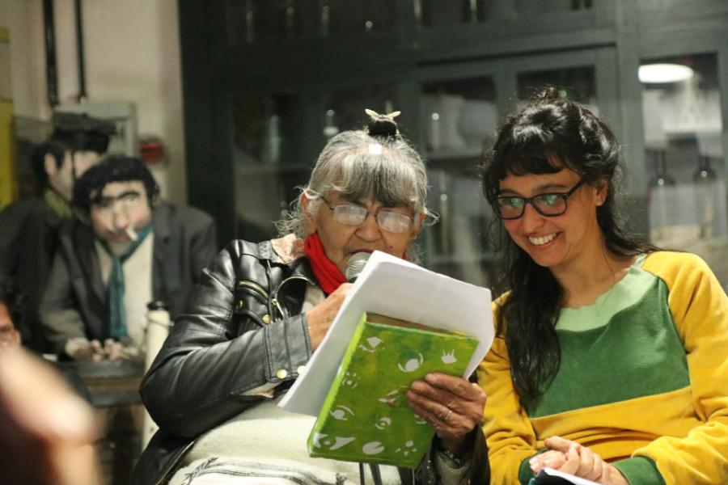
Dinámica del Centro de Día
Actividades de la vida cotidiana
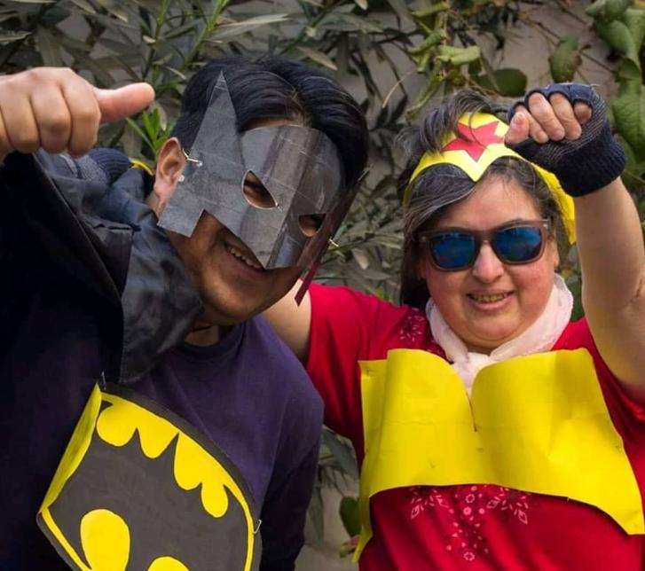
La puesta en acción de nuestra propuesta es en la vida cotidiana El Centro de Día tiene el funcionamiento de una casa, allí se desarrollan actividades cotidianas en las que participan quienes asisten a Casandra (desayunar, almorzar, leer libros y revistas, jugar, decorar, hacer compras, paseos, festejar cumpleaños u otros acontecimientos, asistir a eventos deportivos, sociales, culturales, etc.).
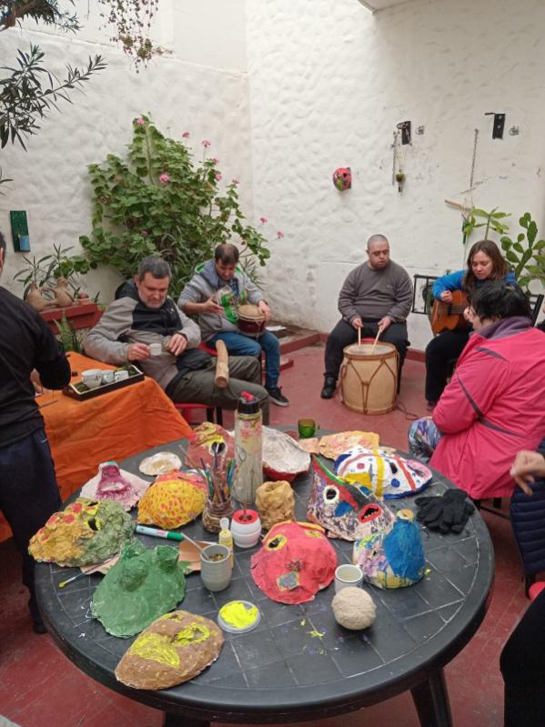
Actividades de integración y recreación
Se trabaja en torno a la creación y sostenimiento de los vínculos dentro del Centro de Día como así también en el ámbito familiar y comunitario, logrando una mayor comunicación e integración grupal y social así como también la creación de prácticas sociales. En este eje se incluye las Actividades de Verano, Acantonamiento, las salidas y caminatas por el barrio, el festejo de cumpleaños de cada concurrente y otros festejos (día del amigo, día de la primavera) participación en eventos que organizan otras instituciones, así como también espectáculos públicos (cine, bares, museos, recitales, carnaval, salidas a lugares históricos de la ciudad, etc.)
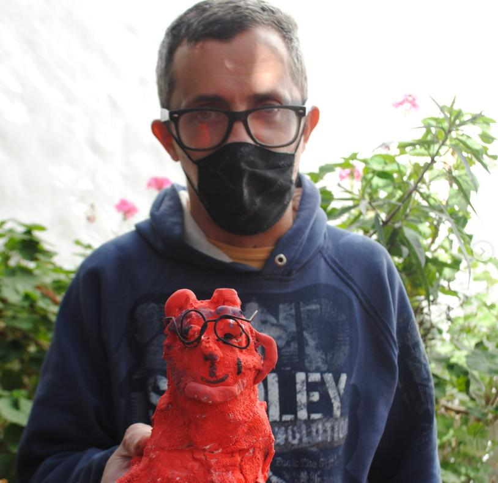
Talleres
Consideramos al taller como herramienta alternativa de expresión, para lograr reconstruir lazos sociales, crear nuevos y desarrollar capacidades personales
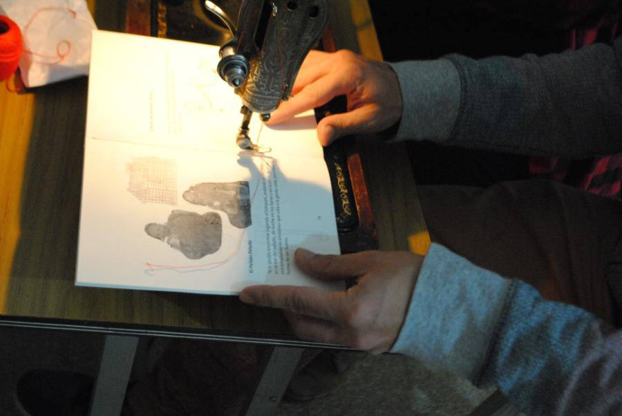
Los que funcionan en este momento son: Taller de Producción Editorial que comprende los talleres de Escritura Creativa y de Artes Visuales, Taller de Radio y Taller de Edición; Taller de Teatro, Taller de Tiempo libre (Terapia Ocupacional), Taller de Cocina, Taller de Expresión Corporal, Taller de Zumba, Taller de Musicoterapia, Taller de Actividades Físicas Adaptadas, Taller de Cerámica, Taller de Producción Periodística, Taller de cuidados personales. Además de actividades que pueden con el tiempo funcionar como talleres.
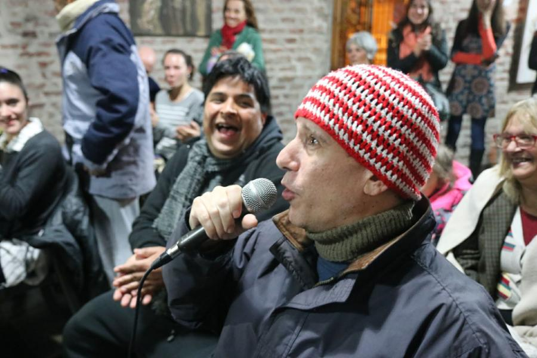
Asamblea Semanal
Otro pilar del trabajo permite que las personas que integran el Centro de Día puedan hacer propuestas de actividades especiales, talleres, modo de funcionamiento, plantear problemas, encontrar soluciones, participar en las decisiones, hacer críticas.
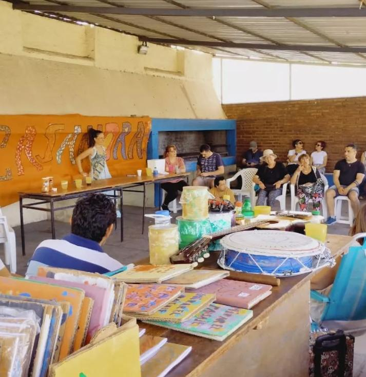
Gabinetes y Trabajo Socio Familiar
Dentro del Centro de Día cobra relevancia el trabajo en gabinete para poder abordar situaciones específicas y particulares de cada sujeto, su familia y su entorno social. Para esto conformamos un equipo con formación y experiencia trabajando en una dinámica de continua interrelación. Contamos con gabinete en las áreas de Psicología, Trabajo Social, Fonoaudiología, Psicomotricidad, Kinesiología, Nutrición.
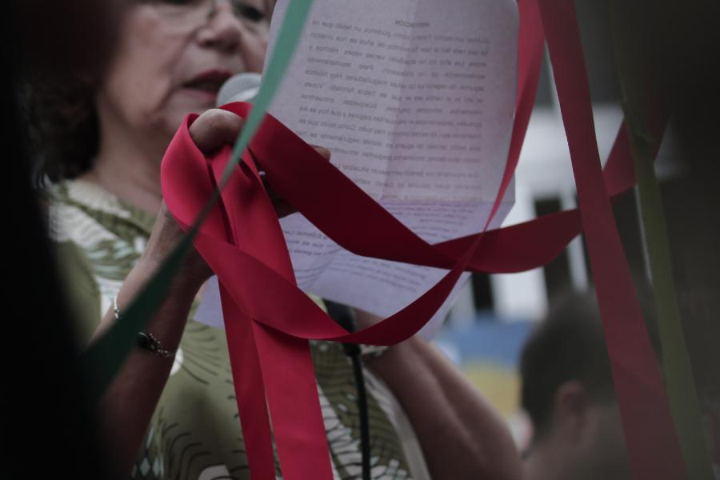
Reuniones clínicas y espacio de formación
Una formación y reflexión permanente atraviesan y son parte fundamental de nuestro trabajo en el centro de día. Así, se realizan reuniones de equipo una vez por semana. Y una vez al mes contamos con un espacio de formación dinámico y participativo.
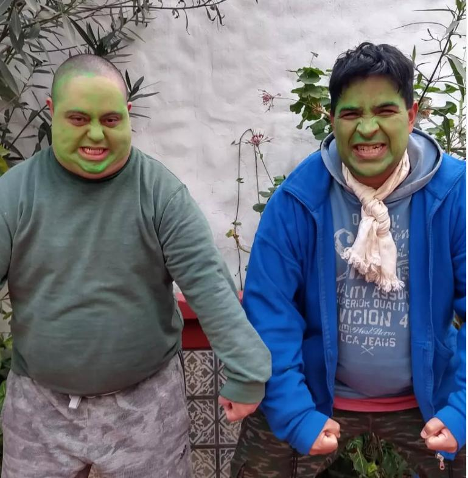